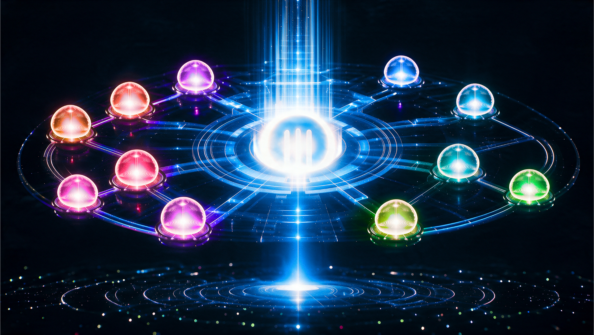

| Measured | Old (flashing) | New (unison) |
|---|---|---|
| Global breath swing | 0.0118 | 0.0610 — 5.2× stronger |
| Breath smoothness | 17.1 | 57.6 — 3.4× smoother |
| Radial peak order, inner→outer | [22, 22, 13, 17] incoherent | [3, 11, 23, 41] true outward wave |
| Camera drift | 0 px | 0 px |
| Loop wrap vs adjacent frame | 0.60× | 0.33× — seamless |